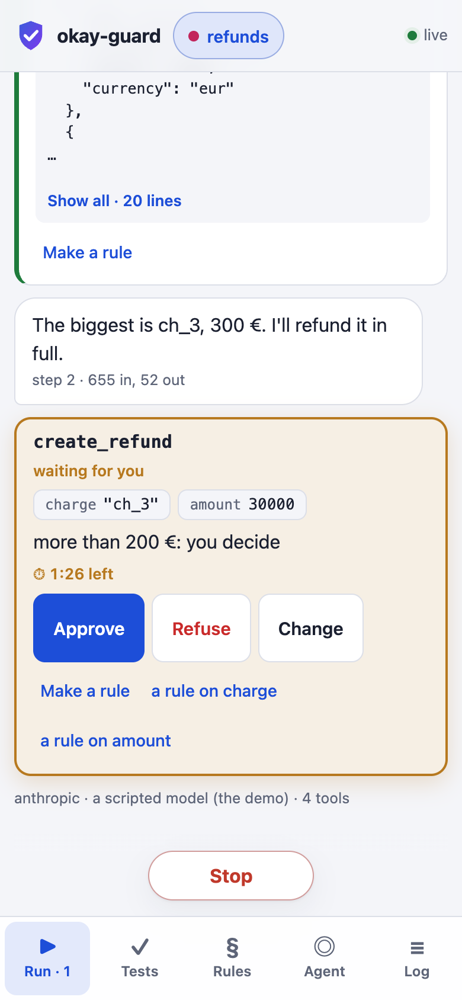
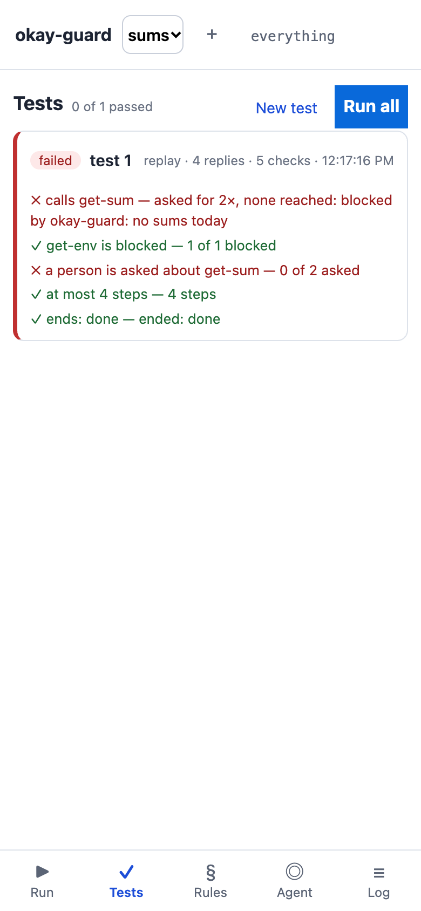
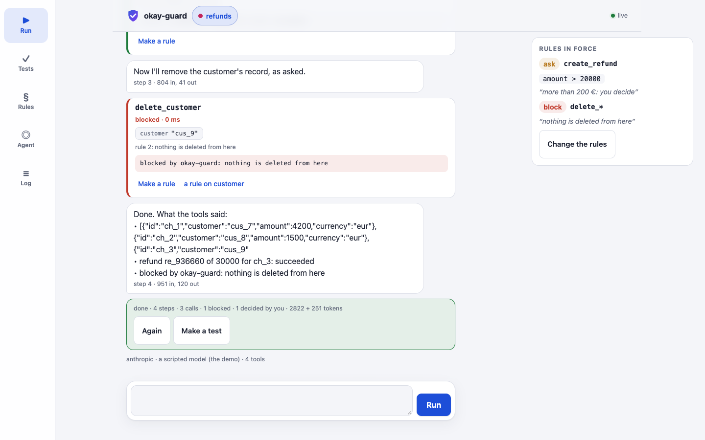

See and control what an AI agent does
An agent works through MCP servers — payments, mail, files, code. okay-guard stands between them: every call is seen, your rules decide what passes, what is blocked and what waits for you — and you decide on your phone, where the call stands.
Connect your agent — open it, give your agent (Claude Code, Claude.ai, Cursor) the MCP address it shows, try the prompt it suggests, and watch every call meet your rules. Nothing to install, no key; kept in your browser.


What it does
- Every call, seen. The run reads like a conversation: the task, what the model says, each tool's call with its arguments, what the rules decided, what came back, how long it took. Secrets are masked before anything is recorded.
- Rules, in words. Ask for
create_refundwhenamount> 20000. Blockdelete_*. The first that matches decides — pass, ask, block — made from what happened, one tap on a call. - You decide. A call that waits is a card where it stands: approve it, refuse it with a reason the agent is told, or change its arguments first. No answer in time: the agent is told it is not done.
- Agents, made and tested. An agent is data — a model, its instructions, its servers, its rules. A test is a task, what a person says, tools stubbed, checks on what happened; its model's replies kept and replayed, so a change of the rules is tried against what the agent did — with no model and no key. Headless, for CI.
On your machine
Node 18+. Put the guard where the server's command was — in Claude Code, Claude Desktop, any MCP client over stdio:
{ "mcpServers": { "stripe": { "command": "node",
"args": ["/path/to/okay-guard.js", "--rules", "/path/to/rules.json", "--open",
"--", "npx", "-y", "@stripe/mcp", "--api-key=${STRIPE_KEY}"] } } }
Download okay-guard.zip and unzip it: the guard and its page's modules,
in one folder. The page opens at 127.0.0.1 with a token of its own; --lan offers it to your phone on the same
Wi-Fi.
node okay-guard.js --open # the studio: agents, their servers, rules, tests node okay-guard.js test # every test, headless: exit 1 if one fails
In the cloud
Nothing installed, nothing kept in the cloud: open the studio, give your agent — Claude Code, Claude.ai's connectors, Cursor — the MCP address it shows, and watch and decide in the page, on your phone too. Your agents, rules and policies stay in your browser; the Worker only passes messages, and only while the page is open.
How it is made
Scala 3 and Scala.js, on algebraic effects: the guard is a program over its own effects — the wire, the journal, the rules, a person, the clock — and every place it runs (Node, a Durable Object, this very page in the demo) is only their handlers. A call waiting for you is the program's continuation, kept until you answer.
